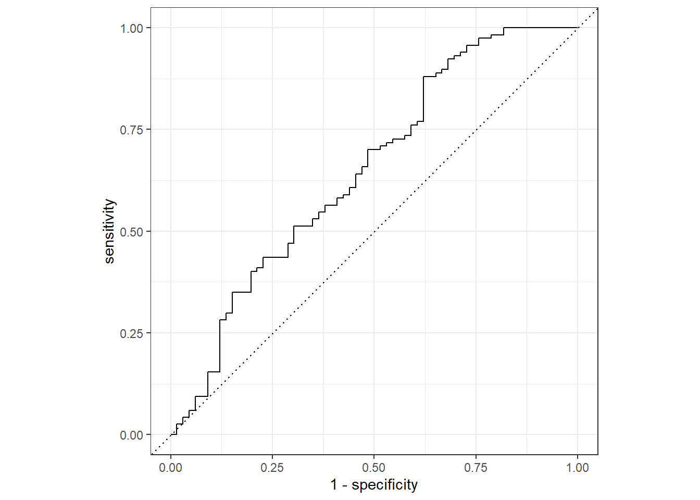
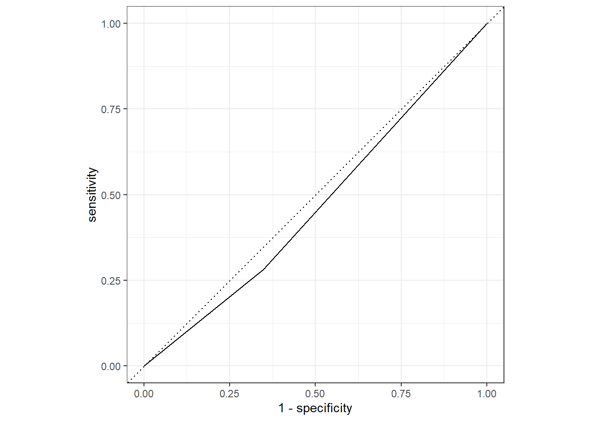

library(here)## here() starts at C:/Users/Priyanka/Desktop/MADA_2021/Priyanka-gannavarapu-MADA-portfoliolibrary(tidymodels)## Registered S3 method overwritten by 'tune':
## method from
## required_pkgs.model_spec parsnip## -- Attaching packages -------------------------------------- tidymodels 0.1.4 --## v broom 0.7.9 v recipes 0.1.17
## v dials 0.0.10 v rsample 0.1.0
## v dplyr 1.0.7 v tibble 3.1.3
## v ggplot2 3.3.5 v tidyr 1.1.4
## v infer 1.0.0 v tune 0.1.6
## v modeldata 0.1.1 v workflows 0.2.4
## v parsnip 0.1.7 v workflowsets 0.1.0
## v purrr 0.3.4 v yardstick 0.0.8## -- Conflicts ----------------------------------------- tidymodels_conflicts() --
## x purrr::discard() masks scales::discard()
## x dplyr::filter() masks stats::filter()
## x dplyr::lag() masks stats::lag()
## x recipes::step() masks stats::step()
## * Learn how to get started at https://www.tidymodels.org/start/library(dplyr)
#path to data
data_location <- here::here("files","processeddata.rds")
#load data.
cleaneddata <- readRDS(data_location)
#SPliting data :a training set and a testing set
# Put 3/4 of the data into the training set
data_split1 <- initial_split(cleaneddata, prop = 3/4)
# Create data frames for the two sets:
train_data <- training(data_split1)
test_data <- testing(data_split1)
# Creating Recipe for all predcitors
nausea_recipe <- recipes::recipe(Nausea ~ ., data = train_data)
nausea_recipe## Recipe
##
## Inputs:
##
## role #variables
## outcome 1
## predictor 31# Model 1. Fitting a logistic model to Nausea using all predictors of interest
log_fit <-
logistic_reg() %>%
set_mode("classification") %>%
set_engine("glm")
# Using workflow to pair a model and recipe together.
nausea_wflow <-
workflow() %>% add_model(log_fit) %>% add_recipe(nausea_recipe)
nausea_wflow## == Workflow ====================================================================
## Preprocessor: Recipe
## Model: logistic_reg()
##
## -- Preprocessor ----------------------------------------------------------------
## 0 Recipe Steps
##
## -- Model -----------------------------------------------------------------------
## Logistic Regression Model Specification (classification)
##
## Computational engine: glm#Preparing the recipe and train the model
nausea_fit <-
nausea_wflow %>%
fit(data = train_data)
# Extracting model
nausea_fit %>%
extract_fit_parsnip() %>%
tidy()## # A tibble: 38 x 5
## term estimate std.error statistic p.value
## <chr> <dbl> <dbl> <dbl> <dbl>
## 1 (Intercept) -2.23 9.39 -0.238 0.812
## 2 SwollenLymphNodesYes -0.203 0.236 -0.861 0.389
## 3 ChestCongestionYes 0.218 0.260 0.836 0.403
## 4 ChillsSweatsYes 0.212 0.343 0.619 0.536
## 5 NasalCongestionYes 0.531 0.316 1.68 0.0924
## 6 CoughYNYes -0.113 0.596 -0.190 0.849
## 7 SneezeYes 0.183 0.253 0.725 0.468
## 8 FatigueYes 0.212 0.495 0.428 0.669
## 9 SubjectiveFeverYes 0.0165 0.269 0.0613 0.951
## 10 HeadacheYes 0.549 0.367 1.50 0.135
## # ... with 28 more rows# Predicting with unseen test data
predict(nausea_fit, test_data)## Warning in predict.lm(object, newdata, se.fit, scale = 1, type = if (type == :
## prediction from a rank-deficient fit may be misleading## # A tibble: 183 x 1
## .pred_class
## <fct>
## 1 No
## 2 No
## 3 No
## 4 No
## 5 Yes
## 6 No
## 7 No
## 8 No
## 9 No
## 10 No
## # ... with 173 more rows# Probabilities
Nausea_aug = augment(nausea_fit, test_data)## Warning in predict.lm(object, newdata, se.fit, scale = 1, type = if (type == :
## prediction from a rank-deficient fit may be misleading
## Warning in predict.lm(object, newdata, se.fit, scale = 1, type = if (type == :
## prediction from a rank-deficient fit may be misleading# The data look like:
Nausea_aug %>%
select(Nausea, .pred_class, .pred_Yes)## # A tibble: 183 x 3
## Nausea .pred_class .pred_Yes
## <fct> <fct> <dbl>
## 1 Yes No 0.0901
## 2 Yes No 0.409
## 3 No No 0.410
## 4 No No 0.428
## 5 Yes Yes 0.975
## 6 No No 0.241
## 7 Yes No 0.194
## 8 No No 0.260
## 9 No No 0.341
## 10 No No 0.206
## # ... with 173 more rows# ROC curve
Nausea_aug %>%
roc_curve(truth = Nausea, .pred_No) %>%
autoplot()
## Alternative model with one predictor(Runnynose)
## Creating a recipe: Nausea x RunnyNose
nausea_runnynose_recipe <-
recipe(Nausea ~ RunnyNose, data = train_data)
# Fitting a logistic model to Nausea using all predictors of interest
log_fit <-
logistic_reg() %>%
set_mode("classification") %>%
set_engine("glm")
# Using workflow to pair a model and recipe together.
nausea_runnynose_wflow <-
workflow() %>% add_model(log_fit) %>% add_recipe(nausea_runnynose_recipe)
nausea_runnynose_wflow## == Workflow ====================================================================
## Preprocessor: Recipe
## Model: logistic_reg()
##
## -- Preprocessor ----------------------------------------------------------------
## 0 Recipe Steps
##
## -- Model -----------------------------------------------------------------------
## Logistic Regression Model Specification (classification)
##
## Computational engine: glm#Preparing the recipe and train the model
nausea_runnynose_fit <-
nausea_runnynose_wflow %>%
fit(data = train_data)
# Extracting model
nausea_runnynose_fit %>%
extract_fit_parsnip() %>%
tidy()## # A tibble: 2 x 5
## term estimate std.error statistic p.value
## <chr> <dbl> <dbl> <dbl> <dbl>
## 1 (Intercept) -0.772 0.173 -4.47 0.00000794
## 2 RunnyNoseYes 0.184 0.202 0.908 0.364# Predicting with unseen test data
predict(nausea_runnynose_fit, test_data)## # A tibble: 183 x 1
## .pred_class
## <fct>
## 1 No
## 2 No
## 3 No
## 4 No
## 5 No
## 6 No
## 7 No
## 8 No
## 9 No
## 10 No
## # ... with 173 more rows# Probabilities
Nausea_runnynose_aug = augment(nausea_runnynose_fit, test_data)
# The data look like:
Nausea_runnynose_aug %>%
select(Nausea, .pred_class, .pred_Yes)## # A tibble: 183 x 3
## Nausea .pred_class .pred_Yes
## <fct> <fct> <dbl>
## 1 Yes No 0.316
## 2 Yes No 0.316
## 3 No No 0.357
## 4 No No 0.357
## 5 Yes No 0.316
## 6 No No 0.357
## 7 Yes No 0.357
## 8 No No 0.316
## 9 No No 0.316
## 10 No No 0.357
## # ... with 173 more rows# ROC curve
Nausea_runnynose_aug %>%
roc_curve(truth = Nausea, .pred_No) %>%
autoplot()